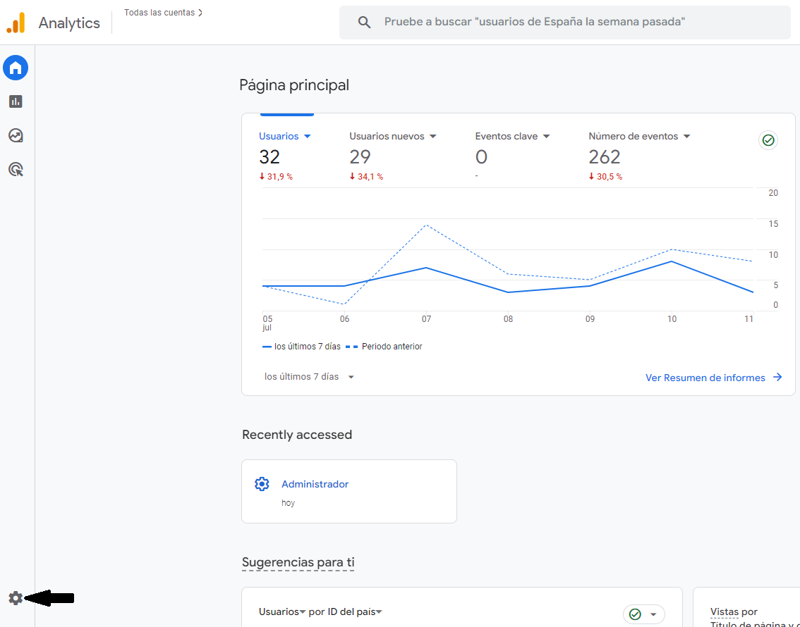
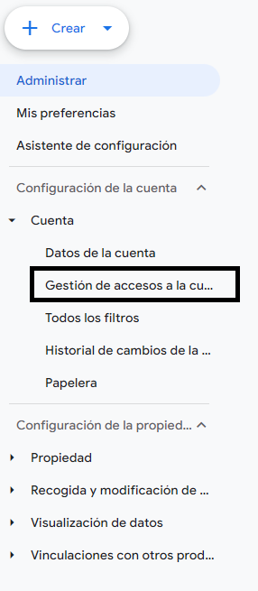
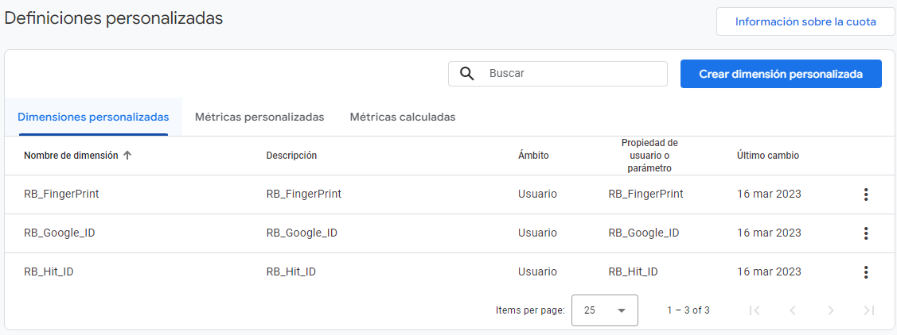

UnDato
Que es un Dato
Somos una compañía que entiende que las decisiones deben ser tomadas a partir de datos ciertos, fidedignos y valiosos, entregados en el momento justo y de forma confiable, por esto, nuestras soluciones basadas en información recopilada de múltiples fuentes, nos permiten potenciar y mejorar las experiencias de sus clientes a partir de la ejecución de estrategias basadas en datos
Tecnología Un Dato
Basamos nuestros productos en la captura y enriquecimiento de data, se recopilada información sobre individuos o grupos de personas, tales como su demografía, intereses, comportamientos y preferencias, esta se recopila de variadas fuentes.
Beneficios de utilizar tus datos para la toma de decisiones de negocio
- Contar con datos coherentes y precisos que permiten tomar decisiones informadas
- Optimizar la adquisición de clientes y aumentar su LTV (Life Time Value)
- Vincular datos a los objetivos de negocio
- Monitorear de manera oportuna la empresa y tomar decisiones a tiempo
- Poder anticipar cambios en tendencias de los usuarios y reaccionar a tiempo
- Identificar navegantes que estén listos para convertirse en usuarios registrados y/o en clientes de pago
- Descubrir clientes potenciales que prometen una mayor oportunidad de ventas Detectar clientes existentes que sean sujetos de estrategias de up selling y cross selling
- Descubrir qué clientes tienen poca afinidad y dificultades para utilizar productos y/o servicios y que como resultado podrían dejar de ser clientes, pudiendo establecer para estos segmentos estrategias que contrarresten el churn y mejoren las tasas de abandono .
Pre-Requisistos
- API Key UnDato, este es del tipo UUID
00000000-0000-0000-0000-000000000000, este es enviado al correo, en caso de no tenerlo, debes realizar el registro enhttps://undato.co/get-pixel - Se debe tener acceso a Google analytics, y este debe estar instalado en el sitio Web, en caso de no tener instalado este, se recomienda ir a
https://analytics.google.com/ - Se debe tener acceso a Google tagmanager, y este debe estar instalado en el sitio Web, en caso de no tener instalado este, se recomienda ir a
https://tagmanager.google.com/ - Acceso al código fuente del sitio o el administrador de contenido
- Se requiere agregar a informacion@dpgroupcorp.com y pruebas-robotina@my-project-1538173462273.iam.gserviceaccount.com
ambos emails con permisos de Lectura en Google analytics y Google tagmanager
Estos se utilizaran exclusivante como consulta para UnDato
set-up Google analytics
Debes ingresar a Google analytics, seleccionar el sitio destino, posteriormente buscar el ícono Administrar

En el menú selecciona Cuenta -> Gestión de accesos a la cuenta

Se debe dar clic en el sitio en el ícono +

Añadir Roles y restricciones de datos, se debe agregar en Roles estándares tipo Lectura

Agregamos las Definiciones personalizadas; Visualización de Datos -> Definiciones personalizadas

Las dimensiones requeridas son
RB_FingerPrintRB_Google_IDRB_Hit_ID

Get started
The Westeros API provides programmatic access to read Game of Thrones data. Retrieve a character, provide an oauth connexion, retrieve a familly, filter them, etc.
To use this API, you need an API key. Please contact us at jon.snow@nightswatch.wes to get your own API key.
set-up Código Fuente
Agregar script de llamado a UnDato
# Insert code on HTML before close head
<script src="http://pixel.undato.co/bip.robotina.co/js/undato/pixel_1.js" defer
onload="onLoadUndatoSmart('your-api-key')"></script>
Este debe ser agregado antes de cerrar la etiqueta head:
en caso de no tener API KEY debes realizar el registro
Desarrollo
http://pixel.undato.co/bip.robotina.co/js/undato/pixel_1.js
Producción
http://pixel.undato.co/bip.robotina.co/js/undato/prod/pixel_1.min.js
Crear una función onLoadUndatoSmart
function onLoadUndatoSmart(newskey) {
UTILSSMART.setupundaptopixel(newskey).then(resultsp => {
SMART.initRobotsmt().then(resultinitrobot => {
window.dataLayer = window.dataLayer || [];
robotina.push({
//Your custom code here
});
dataLayer.push({
'RB_FingerPrint': resultinitrobot.FingerPublic,
'RB_Google_ID': resultinitrobot.gaid,
'RB_Hit_ID': resultsp });
dataLayer.push({ 'event': 'send_smart_data_ga4' });
SMART.initRobot();
}).catch(error => { console.log(error); });
}).catch(error => { console.log(error); });
}
Se requiere crear una función Javascript con el nombre onLoadUndatoSmart, este debe ser llamado en todas las páginas
# Here is a curl example
curl \
-X POST http://api.westeros.com/character/get \
-F 'secret_key=your_api_key' \
-F 'house=Stark,Bolton' \
-F 'offset=0' \
-F 'limit=50'
Result example :
{
query:{
offset: 0,
limit: 50,
house: [
"Stark",
"Bolton"
],
}
result: [
{
id: 1,
first_name: "Jon",
last_name: "Snow",
alive: true,
house: "Stark",
gender: "m",
age: 14,
location: "Winterfell"
},
{
id: 2,
first_name: "Eddard",
last_name: "Stark",
alive: false,
house: "Stark",
gender: "m",
age: 35,
location: 'Winterfell'
},
{
id: 3,
first_name: "Catelyn",
last_name: "Stark",
alive: false,
house: "Stark",
gender: "f",
age: 33,
location: "Winterfell"
},
{
id: 4,
first_name: "Roose",
last_name: "Bolton",
alive: false,
house: "Bolton",
gender: "m",
age: 40,
location: "Dreadfort"
},
{
id: 5,
first_name: "Ramsay",
last_name: "Snow",
alive: false,
house: "Bolton",
gender: "m",
age: 15,
location: "Dreadfort"
},
]
}
QUERY PARAMETERS
| Field | Type | Description |
|---|---|---|
| secret_key | String | Your API key. |
| search | String | (optional) A search word to find character by name. |
| house | String | (optional) a string array of houses: |
| alive | Boolean | (optional) a boolean to filter alived characters |
| gender | String |
(optional) a string to filter character by gender: m: male f: female |
| offset | Integer | (optional - default: 0) A cursor for use in pagination. Pagination starts offset the specified offset. |
| limit | Integer | (optional - default: 10) A limit on the number of objects to be returned, between 1 and 100. |
Errors
The Westeros API uses the following error codes:
| Error Code | Meaning |
|---|---|
| X000 | Some parameters are missing. This error appears when you don't pass every mandatory parameters. |
| X001 |
Unknown or unvalid secret_key. This error appears if you use an unknow API key or if your API key expired.
|
| X002 |
Unvalid secret_key for this domain. This error appears if you use an API key non specified for your domain. Developper or Universal API keys doesn't have domain checker.
|
| X003 |
Unknown or unvalid user token. This error appears if you use an unknow user token or if the user token expired.
|